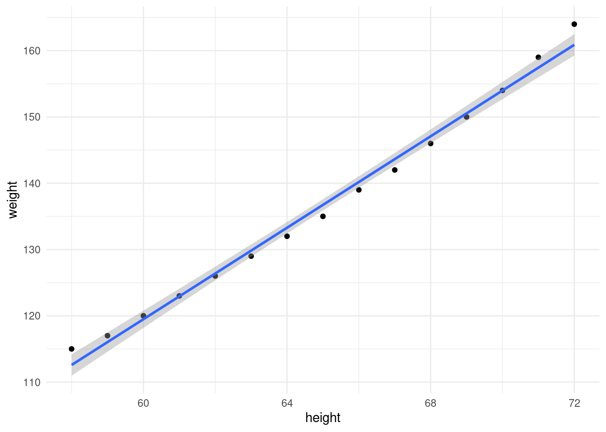
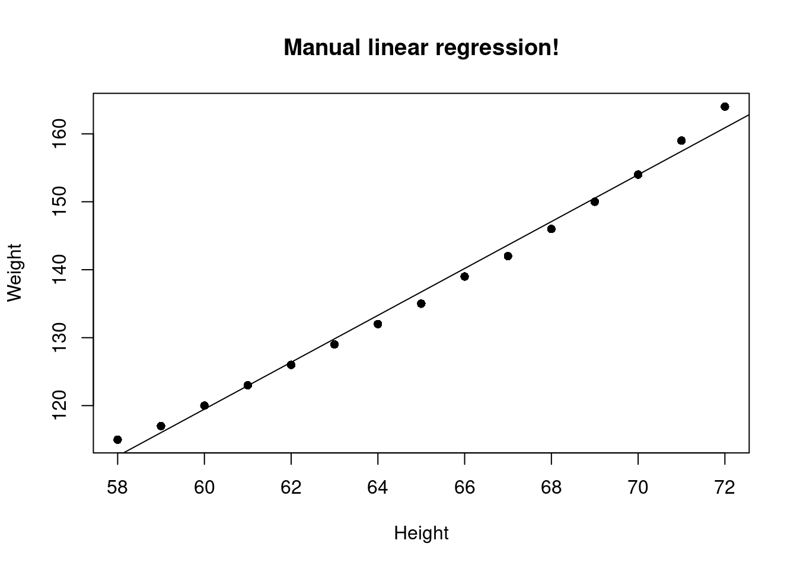
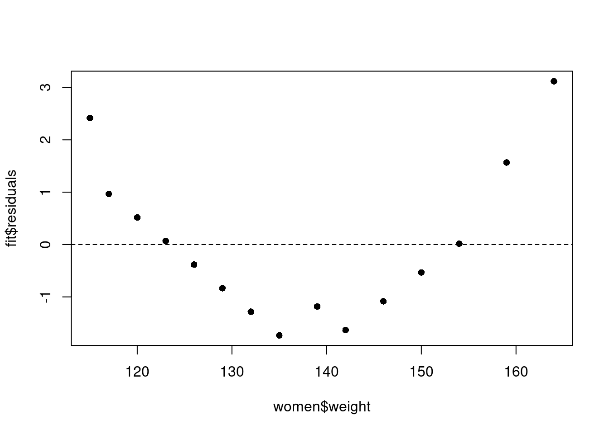
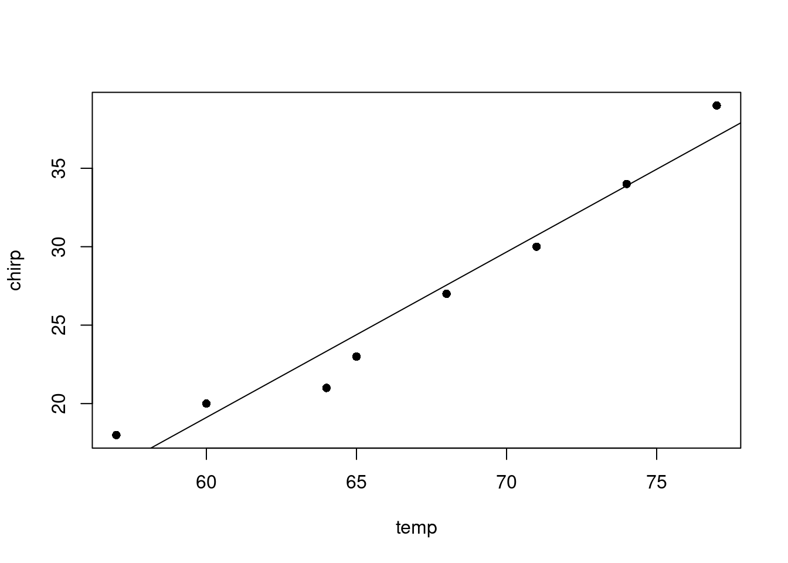
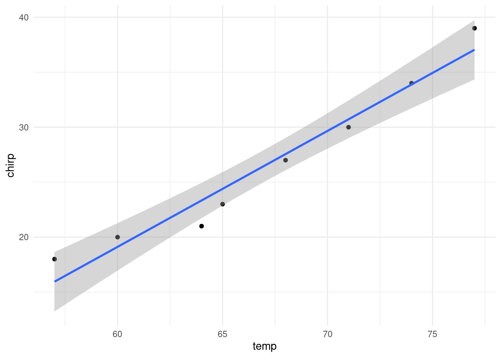
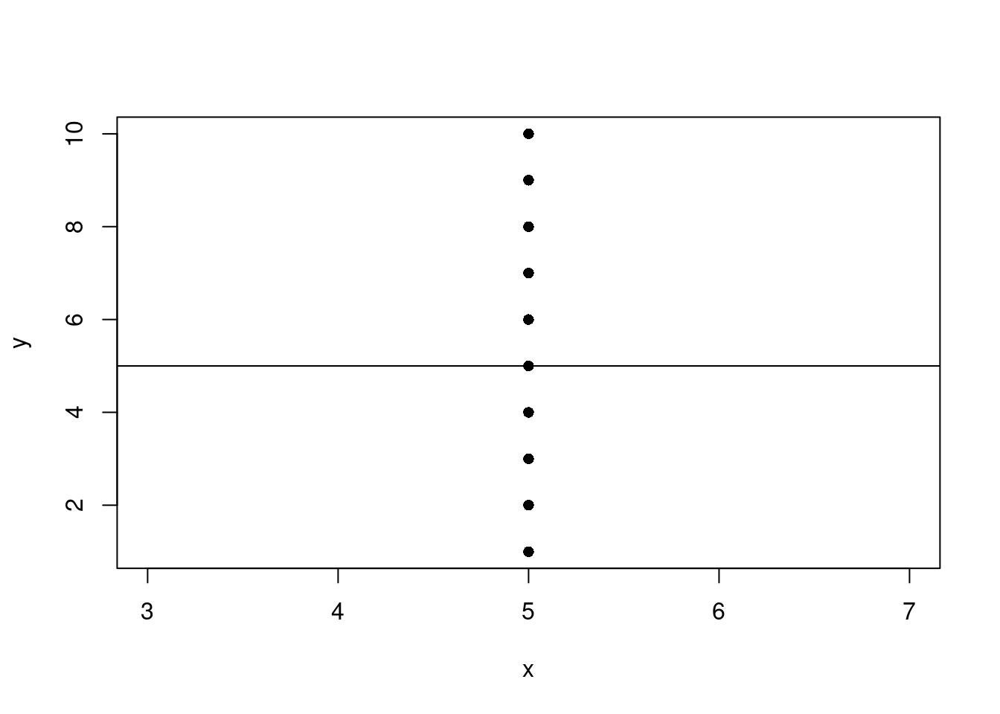
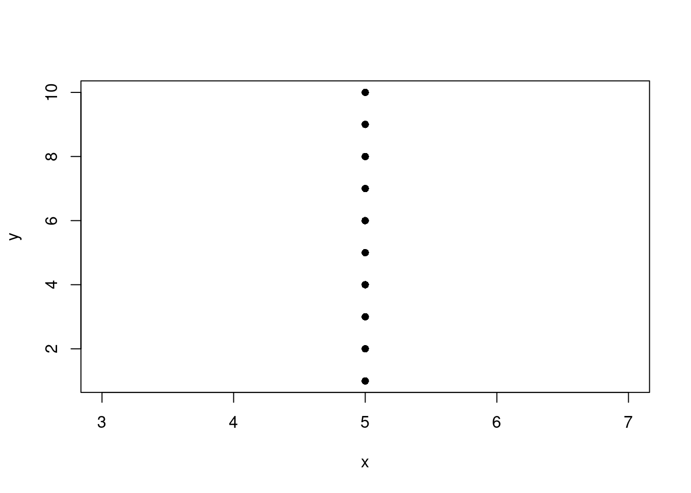
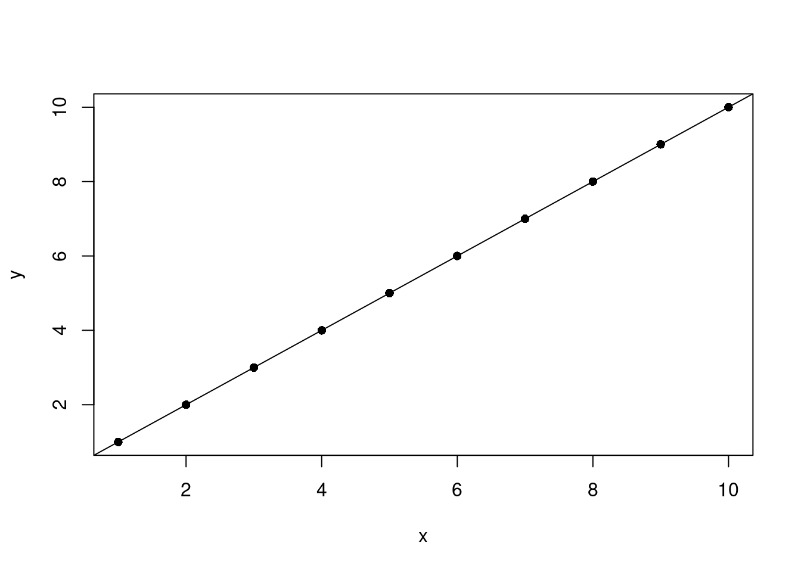

Last updated: 2025-01-09
Checks: 7 0
Knit directory: muse/
This reproducible R Markdown analysis was created with workflowr (version 1.7.1). The Checks tab describes the reproducibility checks that were applied when the results were created. The Past versions tab lists the development history.
Great! Since the R Markdown file has been committed to the Git repository, you know the exact version of the code that produced these results.
Great job! The global environment was empty. Objects defined in the global environment can affect the analysis in your R Markdown file in unknown ways. For reproduciblity it’s best to always run the code in an empty environment.
The command set.seed(20200712) was run prior to running
the code in the R Markdown file. Setting a seed ensures that any results
that rely on randomness, e.g. subsampling or permutations, are
reproducible.
Great job! Recording the operating system, R version, and package versions is critical for reproducibility.
Nice! There were no cached chunks for this analysis, so you can be confident that you successfully produced the results during this run.
Great job! Using relative paths to the files within your workflowr project makes it easier to run your code on other machines.
Great! You are using Git for version control. Tracking code development and connecting the code version to the results is critical for reproducibility.
The results in this page were generated with repository version 4d7cdb8. See the Past versions tab to see a history of the changes made to the R Markdown and HTML files.
Note that you need to be careful to ensure that all relevant files for
the analysis have been committed to Git prior to generating the results
(you can use wflow_publish or
wflow_git_commit). workflowr only checks the R Markdown
file, but you know if there are other scripts or data files that it
depends on. Below is the status of the Git repository when the results
were generated:
Ignored files:
Ignored: .Rhistory
Ignored: .Rproj.user/
Ignored: data/pbmc3k.csv
Ignored: data/pbmc3k.csv.gz
Ignored: data/pbmc3k/
Ignored: r_packages_4.4.0/
Ignored: r_packages_4.4.1/
Note that any generated files, e.g. HTML, png, CSS, etc., are not included in this status report because it is ok for generated content to have uncommitted changes.
These are the previous versions of the repository in which changes were
made to the R Markdown (analysis/lm.Rmd) and HTML
(docs/lm.html) files. If you’ve configured a remote Git
repository (see ?wflow_git_remote), click on the hyperlinks
in the table below to view the files as they were in that past version.
| File | Version | Author | Date | Message |
|---|---|---|---|---|
| Rmd | 4d7cdb8 | Dave Tang | 2025-01-09 | Multiple linear regression |
| html | 243642c | Dave Tang | 2025-01-09 | Build site. |
| Rmd | 0981d28 | Dave Tang | 2025-01-09 | Perfect fit |
| html | 9a03e0f | Dave Tang | 2025-01-09 | Build site. |
| Rmd | ae8a6bd | Dave Tang | 2025-01-09 | Vertical line |
| html | 1d0b364 | Dave Tang | 2025-01-08 | Build site. |
| Rmd | de97616 | Dave Tang | 2025-01-08 | Manual linear regression analysis using R |
On Wikipedia, linear regression is described as:
In statistics, linear regression is a linear approach for modelling the relationship between a scalar response and one or more explanatory variables (also known as dependent and independent variables). The case of one explanatory variable is called simple linear regression; for more than one, the process is called multiple linear regression.
Linear simply means a straight-line, regression in this context means relationship, and modelling means fitting. Therefore, simple linear regression modelling can be interpreted as trying to find the equation of the straight-line that fits the data points the best and captures the relationship between the variables; the best line is the one that minimises the sum of squared residuals of the linear regression model. The equation of a straight line is:
\[y = mx + b\]
where \(m\) is the slope/gradient and \(b\) is the y-intercept.
Here’s a quick example using the “women” dataset that comes with R. I will be using {ggplot2} for plotting, so install it if you want to follow along.
install.packages('ggplot2')The women dataset gives the average heights and weights
for American women aged 30–39.
library(ggplot2)
head(women) height weight
1 58 115
2 59 117
3 60 120
4 61 123
5 62 126
6 63 129Plot height vs. weight and fit a linear model.
ggplot(women, aes(height, weight)) +
geom_point() +
geom_smooth(method = "lm") +
theme_minimal()`geom_smooth()` using formula = 'y ~ x'
| Version | Author | Date |
|---|---|---|
| 1d0b364 | Dave Tang | 2025-01-08 |
There is a clear relationship between height and weight. How do we figure out this line of best fit manually? We can work out \(m\) for the women dataset using the following formula:
\[m = \frac{\sum_{i=1}^{n}(x_i - \overline{x})(y_i - \overline{y})}{\sum_{i=1}^{n}(x_i - \overline{x})^2}\]
where \(n\) is the number of observations in the dataset, \(\sum_{i=1}^n\) means the sum of all the observations, \(x_i\) and \(y_i\) are the \(i\)th observation of \(x\) and \(y\), and \(\overline{x}\) and \(\overline{y}\) are the means of \(x\) and \(y\), respectively.
Once we have \(m\), we can work out \(b\) with:
\[b = \overline{y} - m\overline{x}\]
which is just a rearrangement of:
\[y = mx + b\]
but using the mean values.
We can express these functions in R as:
slope <- function(x, y){
mean_x <- mean(x)
mean_y <- mean(y)
top <- sum((x - mean_x)*(y-mean_y))
bottom <- sum((x - mean_x)^2)
top / bottom
}
# the slope formula is just
# covariance(x, y) / variance(x)
slope2 <- function(x, y){
cov(x, y)/var(x)
}
intercept <- function(x, y, m){
mean(y) - (m * mean(x))
}Before we work out \(m\) and \(b\), a word on dependent
and independent variables. When modelling, we want to work out the
dependent variable from an independent variable (or variables). For this
post, we would like to work out weight from height, therefore our
independent variable is height and dependent variable is weight. It can
be the other way around too. When plotting, the independent variable is
usually on the x-axis, while the dependent variable is on the y-axis (as
I have done above). Now to use our slope() and
intercept() functions.
(my_slope <- slope(women$height, women$weight))[1] 3.45(my_intercept <- intercept(women$height, women$weight, my_slope))[1] -87.51667Let’s plot this using base R functions
plot(women$height, women$weight, pch=16, xlab = "Height", ylab = "Weight", main = "Manual linear regression!")
abline(my_intercept, my_slope)
| Version | Author | Date |
|---|---|---|
| 1d0b364 | Dave Tang | 2025-01-08 |
The lm() function (used for fitting linear models) in R
can work out the intercept and slope for us (and other things too). The
arguments for lm() are a formula and the data; the formula
starts with the dependent variable followed by a tilde ~
and followed with the independent variable.
(fit <- lm(weight ~ height, women))
Call:
lm(formula = weight ~ height, data = women)
Coefficients:
(Intercept) height
-87.52 3.45 Note that the coefficients (Intercept) and
height are the same as what we calculated manually for the
intercept and slope.
There are other values stored in fit object.
names(fit) [1] "coefficients" "residuals" "effects" "rank"
[5] "fitted.values" "assign" "qr" "df.residual"
[9] "xlevels" "call" "terms" "model" The residuals data is the difference between the observed data of the dependent variable and the fitted values. We can plot our observed values against the fitted values to see how well the regression model fits.
plot(women$weight, fit$residuals, pch=16)
abline(h = 0, lty = 2)
| Version | Author | Date |
|---|---|---|
| 1d0b364 | Dave Tang | 2025-01-08 |
The fourth point from the left has a residual that is close to zero; this is because the fitted weight (122.9333 pounds) is almost the same as the real weight (123 pounds) for someone who is 61 inches tall.
We can use the predict() function to predict someone’s
weight based on their height. Below we predict someone’s weight when
they are 61 and 80 inches tall.
predict(fit, data.frame(height = 61)) 1
122.9333 predict(fit, data.frame(height = 80)) 1
188.4833 There’s a nice example on linear regression in the “Statistics For Dummies” book that also demonstrates how you can manually calculate the slope and intercept. Here I’ll perform the analysis using R and the data containing the number of cricket (the insect) chirps versus temperature. First we will create the vectors containing the chirps and temperature.
chirp <- c(18,20,21,23,27,30,34,39)
temp <- c(57,60,64,65,68,71,74,77)The five summaries required for calculating the slope and intercept of the best fitting line are:
We can work out the five summarises using built-in functions in R.
mean(chirp)[1] 26.5mean(temp)[1] 67sd(chirp)[1] 7.387248sd(temp)[1] 6.845228cor(chirp,temp)[1] 0.9774791Note that in the “Statistics For Dummies” book, dependent variables are referred to as response variables and independent variables are referred to as explanatory variables. You can think of the response variable as the variable that responds on a set of variables (explanatory variables) that explains the response.
# formula for the slope m, response variable first
# m = r(sd(x) / sd(y))
(m <- cor(chirp,temp) * (sd(chirp)/sd(temp)))[1] 1.054878# formula for intercept as above
# b = mean(y) - (m * mean(x))
mean(chirp) - (m * mean(temp))[1] -44.17683We can use the lm() function in R to check our
calculation. Models for lm() are specified symbolically and
a typical model has the form response ~ terms, where
response is the response vector and terms is a
series of terms which specifies a linear predictor for response.
We’ll make chirps the response (dependent variable) and temperature the explanatory variable (independent variable), i.e. predicting the number of chirps from the temperature.
lm(chirp~temp)
Call:
lm(formula = chirp ~ temp)
Coefficients:
(Intercept) temp
-44.177 1.055 We see that the coefficients are the same as what we had calculated. We can use the slope and intercept to write a function to predict the number of chirps based on temperature.
# in the form y = mx + b
# y = 1.055x - 44.177
model <- function(x){
1.055 * x - 44.177
}
# how many chirps at 68 Fahrenheit using our linear model?
model(68)[1] 27.563model(77)[1] 37.058We can check our function using the built-in R function called
predict().
reg <- lm(chirp~temp)
predict(reg, data.frame(temp=68)) 1
27.55488 predict(reg, data.frame(temp=77)) 1
37.04878 The linear model generated by R contains some useful information such as the coefficient of determination (i.e. R-square).
summary(reg)$r.squared[1] 0.9554655Use the summary() function to get a full summary.
summary(reg)
Call:
lm(formula = chirp ~ temp)
Residuals:
Min 1Q Median 3Q Max
-2.3354 -0.8872 -0.2195 1.1509 2.0488
Coefficients:
Estimate Std. Error t value Pr(>|t|)
(Intercept) -44.17683 6.25773 -7.06 0.000404 ***
temp 1.05488 0.09298 11.35 2.81e-05 ***
---
Signif. codes: 0 '***' 0.001 '**' 0.01 '*' 0.05 '.' 0.1 ' ' 1
Residual standard error: 1.684 on 6 degrees of freedom
Multiple R-squared: 0.9555, Adjusted R-squared: 0.948
F-statistic: 128.7 on 1 and 6 DF, p-value: 2.808e-05Finally, we can plot the data and add the line of best fit. As per convention, the response variable is on the y-axis and the explanatory variable is on the x-axis.
plot(temp, chirp, pch=16)
abline(reg)
| Version | Author | Date |
|---|---|---|
| 1d0b364 | Dave Tang | 2025-01-08 |
The same plot can be generated using ggplot2.
library(ggplot2)
data.frame(temp = temp, chirp = chirp) |>
ggplot(aes(temp, chirp)) +
geom_point() +
geom_smooth(method = "lm") +
theme_minimal()`geom_smooth()` using formula = 'y ~ x'
| Version | Author | Date |
|---|---|---|
| 1d0b364 | Dave Tang | 2025-01-08 |
What happens if you try to perform linear regression on points that form a vertical line?
Predict x using y.
n <- 10
my_df <- data.frame(
x = rep(5, n),
y = 1:n
)
fit <- lm(x ~ y, my_df)
with(data = my_df, plot(x, y, pch=16))
abline(fit)
| Version | Author | Date |
|---|---|---|
| 9a03e0f | Dave Tang | 2025-01-09 |
Predict y using x.
fit <- lm(y ~ x, my_df)
with(data = my_df, plot(x, y, pch=16))
| Version | Author | Date |
|---|---|---|
| 9a03e0f | Dave Tang | 2025-01-09 |
abline(fit)Error in int_abline(a = a, b = b, h = h, v = v, untf = untf, ...): 'a' and 'b' must be finiteWhat happens if there’s a perfect fit?
n <- 10
my_df <- data.frame(
x = 1:n,
y = 1:n
)
fit <- lm(x ~ y, my_df)
with(data = my_df, plot(x, y, pch=16))
abline(fit)
| Version | Author | Date |
|---|---|---|
| 243642c | Dave Tang | 2025-01-09 |
Summary.
summary(fit)Warning in summary.lm(fit): essentially perfect fit: summary may be unreliable
Call:
lm(formula = x ~ y, data = my_df)
Residuals:
Min 1Q Median 3Q Max
-5.661e-16 -1.157e-16 4.273e-17 2.153e-16 4.167e-16
Coefficients:
Estimate Std. Error t value Pr(>|t|)
(Intercept) 1.123e-15 2.458e-16 4.571e+00 0.00182 **
y 1.000e+00 3.961e-17 2.525e+16 < 2e-16 ***
---
Signif. codes: 0 '***' 0.001 '**' 0.01 '*' 0.05 '.' 0.1 ' ' 1
Residual standard error: 3.598e-16 on 8 degrees of freedom
Multiple R-squared: 1, Adjusted R-squared: 1
F-statistic: 6.374e+32 on 1 and 8 DF, p-value: < 2.2e-16Floating-point precision errors with the residuals, which should be zero, and the intercept, which should also be zero. The slope is correct in that when y increases in 1, x increases in 1.
Predict x using y and z.
n <- 10
set.seed(1984)
my_df <- data.frame(
x = (1:n),
y = (1:n) + rnorm(n, sd = 0.5),
z = rnorm(n)
)
fit <- lm(x ~ y + z, my_df)
summary(fit)
Call:
lm(formula = x ~ y + z, data = my_df)
Residuals:
Min 1Q Median 3Q Max
-0.4473 -0.3698 -0.1993 0.3606 0.9200
Coefficients:
Estimate Std. Error t value Pr(>|t|)
(Intercept) 0.28067 0.43138 0.651 0.536
y 0.93656 0.06898 13.577 2.77e-06 ***
z -0.08051 0.19662 -0.409 0.694
---
Signif. codes: 0 '***' 0.001 '**' 0.01 '*' 0.05 '.' 0.1 ' ' 1
Residual standard error: 0.5473 on 7 degrees of freedom
Multiple R-squared: 0.9746, Adjusted R-squared: 0.9673
F-statistic: 134.2 on 2 and 7 DF, p-value: 2.618e-06The intercept represents the predicted value of x when
y and z (the predictors) are equal to zero.
The intercept is often a baseline or reference point for the model. For
example, suppose we are modelling house prices based on area and number
of bedrooms. If both predictors are zero (a house with zero area and
zero bedrooms), the intercept represents the baseline price of a
property.
sessionInfo()R version 4.4.1 (2024-06-14)
Platform: x86_64-pc-linux-gnu
Running under: Ubuntu 22.04.5 LTS
Matrix products: default
BLAS: /usr/lib/x86_64-linux-gnu/openblas-pthread/libblas.so.3
LAPACK: /usr/lib/x86_64-linux-gnu/openblas-pthread/libopenblasp-r0.3.20.so; LAPACK version 3.10.0
locale:
[1] LC_CTYPE=en_US.UTF-8 LC_NUMERIC=C
[3] LC_TIME=en_US.UTF-8 LC_COLLATE=en_US.UTF-8
[5] LC_MONETARY=en_US.UTF-8 LC_MESSAGES=en_US.UTF-8
[7] LC_PAPER=en_US.UTF-8 LC_NAME=C
[9] LC_ADDRESS=C LC_TELEPHONE=C
[11] LC_MEASUREMENT=en_US.UTF-8 LC_IDENTIFICATION=C
time zone: Etc/UTC
tzcode source: system (glibc)
attached base packages:
[1] stats graphics grDevices utils datasets methods base
other attached packages:
[1] lubridate_1.9.3 forcats_1.0.0 stringr_1.5.1 dplyr_1.1.4
[5] purrr_1.0.2 readr_2.1.5 tidyr_1.3.1 tibble_3.2.1
[9] ggplot2_3.5.1 tidyverse_2.0.0 workflowr_1.7.1
loaded via a namespace (and not attached):
[1] sass_0.4.9 utf8_1.2.4 generics_0.1.3 lattice_0.22-6
[5] stringi_1.8.4 hms_1.1.3 digest_0.6.37 magrittr_2.0.3
[9] timechange_0.3.0 evaluate_1.0.1 grid_4.4.1 fastmap_1.2.0
[13] Matrix_1.7-0 rprojroot_2.0.4 jsonlite_1.8.9 processx_3.8.4
[17] whisker_0.4.1 ps_1.8.1 promises_1.3.0 mgcv_1.9-1
[21] httr_1.4.7 fansi_1.0.6 scales_1.3.0 jquerylib_0.1.4
[25] cli_3.6.3 rlang_1.1.4 splines_4.4.1 munsell_0.5.1
[29] withr_3.0.2 cachem_1.1.0 yaml_2.3.10 tools_4.4.1
[33] tzdb_0.4.0 colorspace_2.1-1 httpuv_1.6.15 vctrs_0.6.5
[37] R6_2.5.1 lifecycle_1.0.4 git2r_0.35.0 fs_1.6.4
[41] pkgconfig_2.0.3 callr_3.7.6 pillar_1.9.0 bslib_0.8.0
[45] later_1.3.2 gtable_0.3.6 glue_1.8.0 Rcpp_1.0.13
[49] highr_0.11 xfun_0.48 tidyselect_1.2.1 rstudioapi_0.17.1
[53] knitr_1.48 farver_2.1.2 nlme_3.1-164 htmltools_0.5.8.1
[57] labeling_0.4.3 rmarkdown_2.28 compiler_4.4.1 getPass_0.2-4